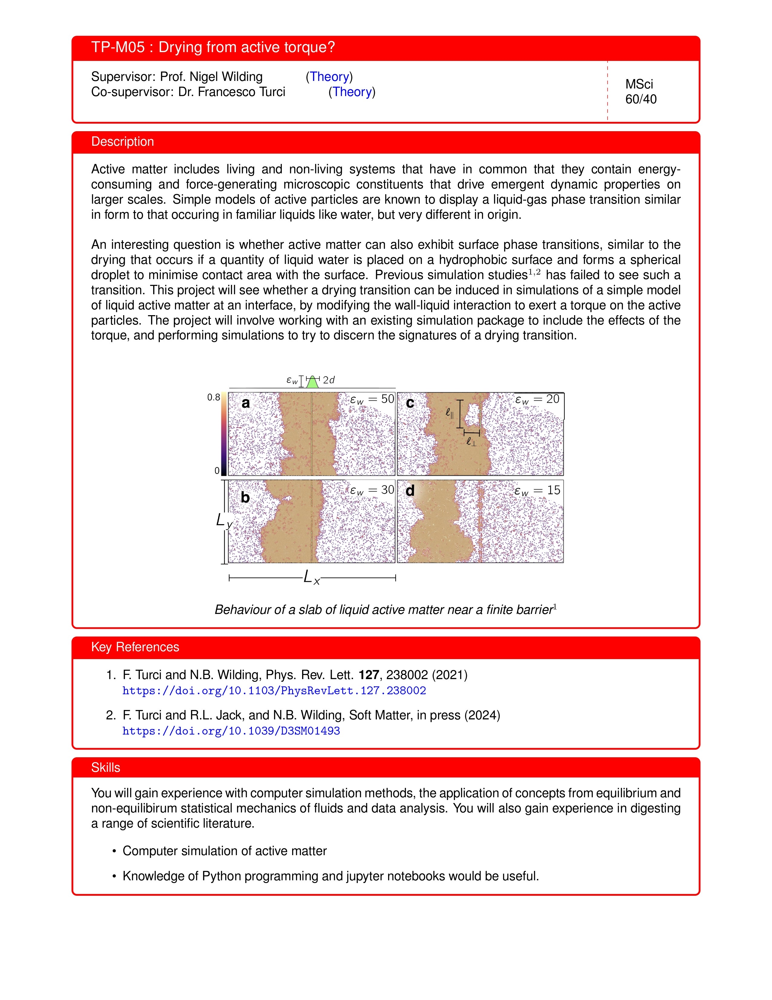

Weekly notes on active matter PhD project
Week 1
2024/9/21 Reading What is a Complex System?
By James Ladyman and Karoline Wiesner
My final-year MSci project involved the study of a complex system, foreign exchange markets. Each individual currency was treated as a spin in the Ising model, and by applying E.T. Jaynes’s principle of maximum entropy, we discovered the structure of interactions between these entities. Remarkably, this simple model of magnetism can also describe the phase transitions of liquid-gas systems, as they fall into the same universality class. This model has even been extended to study how critical our brain is, giving rise to the field of the critical brain hypothesis. Therefore, many ideas during my research project were derived from neuroscience papers. The financial market and the brain: both are complex systems.
About a year ago, I read a paper published by James Ladyman, a professor of philosophy of science at Bristol, titled ‘What is a Complex System?’ (Ladyman et al., 2013). As I started my PhD at Bristol, my second supervisor, Francesco, mentioned that he also published a book about complexity. It became clear to me that I should read this book.
Chapter 1 presents The Truisms of Complexity Science as follows:
1. More is different.
2. Nonliving systems can generate order.
3. Complexity can come from simplicity.
4. Coordinated behaviour does not require an overall controller.
5. Complex systems are often modelled as networks or information processing systems.
6. There are various kinds of invariance and forms of universal behaviour in complex systems.
7. Complexity science is computational and probabilistic.
8. Complexity science involves multiple disciplines.
9. There is a difference between the order that complex systems produce and the order of the complex systems themselves.
Features that are necessary and sufficient for which kinds of complexity and complex system are as follows:
1. Numerosity: complex systems involve many interactions among many components.
2. Disorder and diversity: the interactions in a complex system are not coordinated or controlled centrally, and the components may differ.
3. Feedback: the interactions in complex systems are iterated so that there is feedback from previous interactions on a time scale relevant to the system’s emergent dynamics.
4. Non-equilibrium: complex systems are open to the environment and are often driven by something external.
5. Spontaneous order and self-organisation: complex systems exhibit structure and order that arises out of the interactions among their parts.
6. Nonlinearity: complex systems exhibit nonlinear dependence on parameters or external drivers.
7. Robustness: the structure and function of complex systems is stable under relevant perturbations.
8. Nested structure and modularity: there may be multiple scales of structure, clustering and specialisation of function in complex systems.
9. History and memory: complex systems often require a very long history to exist and often store information about history.
10. Adaptive behaviour: complex systems are often able to modify their behaviour depending on the state of the environment and the predictions they make about it.
Week 2
2024/9/27 Things I did so far
Busy weeks due to starting three teaching modules: Weekly update of my TSR (Teaching Support Roles). Looking back, I wish I could have completed more reading, as there isn’t much to talk about in terms of active matter research for the next project meeting on Monday.
Reading What is a Complex System? by James Ladyman and Karoline Wiesner. The purpose of reading is to understand how systems out of thermodynamic equilibrium (a feature of complex systems) relate to a wide range of concepts associated with complexity.
• There was a video that helped clarify what is meant by a Markov chain and a stochastic process being stationary: Markov Chains Clearly Explained! Part - 1. His other videos are helpful as well. For example, when I saw \(P_{ij}^{(n)} = A_{ij}^n\) from the n-Step Transition Matrix video (Part 3), it was quite surprising. However, the Part 5 video on hidden Markov models wasn’t very helpful, but reading the appendix in the book was sufficient.
• What I’ve felt from reading this book (currently at p.90) is that it presents a lot of different ideas and has interesting discussions on the history of science, but I only seem to get excited when it starts mentioning the brain. I’m not sure if I’m necessarily interested in quantifying complexity. From the Apple notes on 28/9/2024:
As I’m reading through What is a Complex System?, it seems that the description of a complex system arises as we have more representations at different scales of analysis. The concept of ‘complexity’ was destined to arise as the scientific era evolved.
Non-equilibrium systems arise because we define what systems are in thermodynamic equilibrium, which are idealisations.
Things that fail to be idealised fall into this dualistic concept: non-equilibrium.
Week 3
2024/9/30 Weekly project meeting
Things to discuss
Meeting with Max on Friday at noon (4th of Oct), thinking of going to Budapest Café
‘Setting Expectations’ document
Two conferences to join:
• The Dao of Complexity workshop
• The Statistical Physics of Cognition
So, a trip to London, how to sort out things with Clarity, and other arrangements.
Set up RDSF data storage (Though I checked, OneDrive for Business offers 2TB of storage: Overview of OneDrive for Business)
Brief plan discussion: reading Mary Coe’s thesis, then Understanding Molecular Simulation book
Are there MSci students working on this project?
